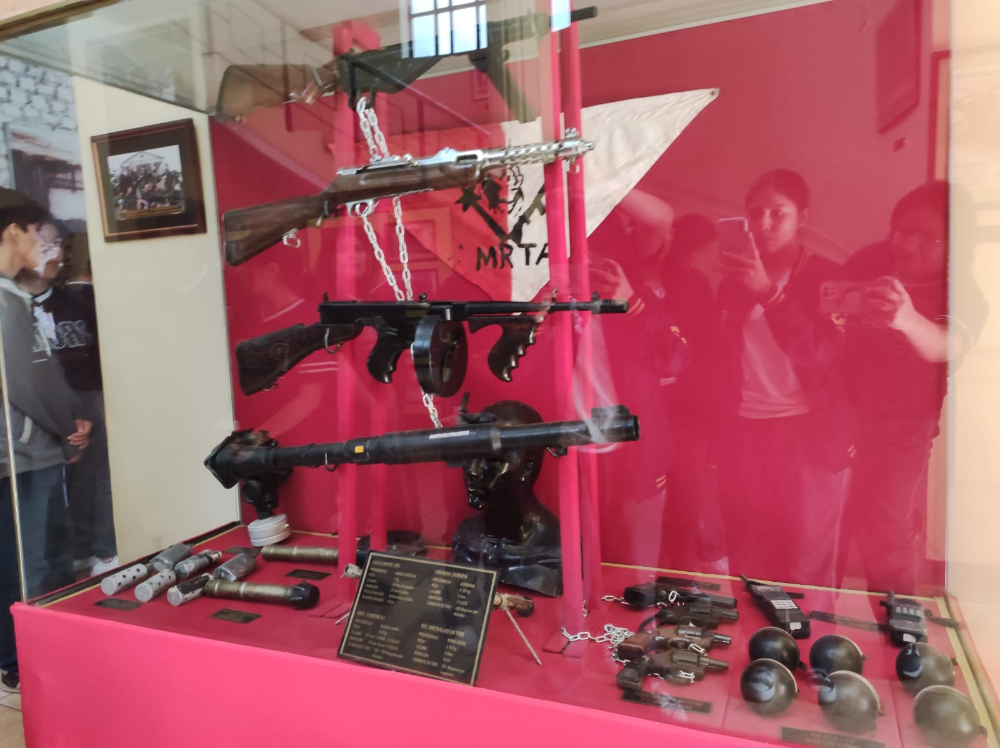

Museo Chavín de Huantar
Se sigue el recorrido entrando al Museo Chavín de Huántar.

Se sigue el recorrido entrando al Museo Chavín de Huántar.
Operación Chavín de Huántar maquetada.

Armamento requisado por el ejército del grupo terrorista MRTA.
Túnel por el que se realizó la Operación Chavín de Huántar, tiene una longitud de 1.5km y en él se detonó dinamita para acabar con los terroristas que jugaban fulbito en la embajada japonesa.
Prueba para la dinamización de una de las áreas en las que se encontraban los terroristas.
Toma actual de donde se encontraba la embajada de Japón.
Terroristas fallecidos durante la operación.
Cuarto E: Cuarto en memoria al Mariscal Jimenez.
Terraza donde se encontraron los rehenes.
Armamento del Comando Equipado.
Embajadores japoneses.